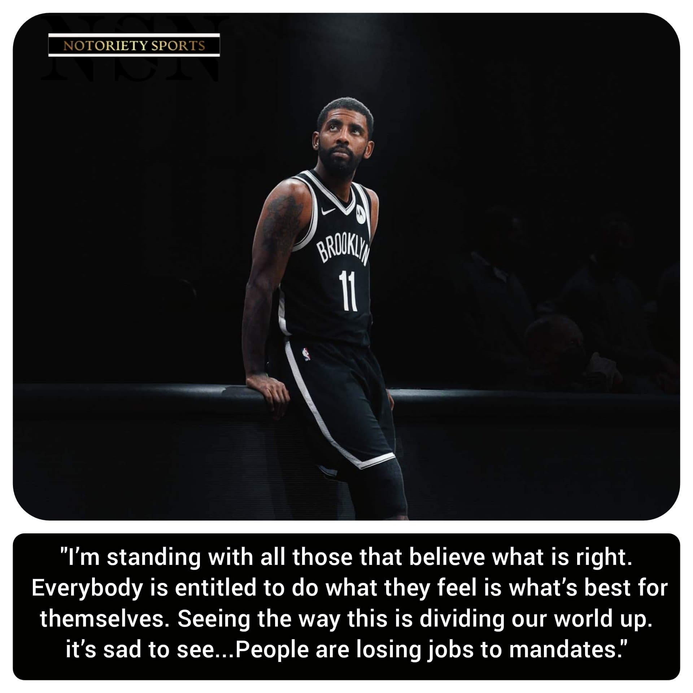

NBA | 天下苍生关你球事啊！欧文
还有一周的时间，NBA 新赛季就要开始了，而占据着各大体育网站的头条仍然是欧文拒打疫苗的闹剧，这个曾经的美国之子彻底成为目前世界体坛上的最大“刺头”。

我们先来梳理一下这出闹剧的时间线：
8 月 12 日，篮网总经理马克斯在接受采访时表示，篮网正在和欧文及哈登进行提前续约的合同谈判。(原文链接)
9 月 16 日，NBA 记者 Nick Wright 在推特上爆料，若篮网交易欧文的话，后者会直接退役。欧文亲自下场称其为“傀儡一个”。(原文链接)
9 月 24 日，福克斯体育报道称欧文还未接种疫苗，这意味着他将无法出战新赛季篮网的主场比赛。(原文链接)
9 月 28 日，篮网媒体日，欧文接受采访时被问及是否接种了疫苗，他拒绝回答并表示：“请尊重我的隐私。一切的事情都会在一切清楚后得到公布。”。(原文链接)
10 月 4 日，篮网主教练纳什接受采访时表示：“目前没有欧文的疫苗接种情况更新，也不确定他是否可以参与球队在纽约的训练。”(原文链接)
10 月 8 日，沃神发推称：“欧文对疫苗接种的持续抵制让网队为在可预见的未来没有他进行训练和比赛的可能性做准备。”(原文链接)
10 月 9 日消息，纽约市政府将篮网训练馆列为私人办公场所，欧文可以参加篮网队内训练。(原文链接)
10 月 11 日，篮网主教练纳什表示：“目前来说，球队是按照欧文因防疫条例的影响不能参加主场比赛而准备的。但就像我之前说的一样，情况有可能随时发生改变。”(原文链接)
10 月 12 日，篮网队发布官方声明，宣布在欧文完全履行纽约地区的防疫规定之前，他不会代表球队参加比赛或者训练。(原文链接)
10 月 13 日，NBA 名记 Shames Charania 参加播客时透露，篮网不会为欧文提供提前续约合同。(原文链接)
10 月 14 日，欧文在 INS 直播，称“现实情况是如果要在纽约打球，要代表球队出战，我必须接种疫苗。我选择了不接种疫苗，这是我的选择，我希望你们都能尊重这个选择”。(原文链接)
网上有个好玩的图，讲的是英法美俄几个国家的文学特点：

英国文学说，我愿为荣誉而死；法国文学说；我愿为爱情而死；美国文学说，我愿为自由而死；俄罗斯文学说，我会死。
欧文在为自己不打疫苗的权利而抗争，既然美国法律规定打不打疫苗是我的自由，因此我可以选择打也可以选择不打。但是你纽约政府规定不打疫苗的话就不允许工作，这某种程度上就是强迫我接种疫苗，这剥夺了我选择的权利。
以上只是我的腹诽，欧文在我的心目中，是年纪轻轻就站在篮坛塔尖的天之骄子，拥有着多少人求之不得的卓绝的天赋，可是场外风波最多的人也是他，以自我为中心这个世界呈二维展开在欧文身上体现得淋漓尽致。
在我等平凡人的眼中，这天赋是“老天爷赏饭吃”，不好好珍惜那不是造孽嘛，在欧文眼中这一切不过是理所当然。
看了欧文直播时讲的心里话，确实让我挺意外，他不打疫苗的理由除了原本我能够猜到的听从内心召唤之外，还有一条，那就是为那些由于没有接种疫苗而失去工作的人发声，在他看来“你不能强迫任何人，强迫对他们的身体做任何事。任何人都不应该被迫对自己的身体做任何事情，因为一个人一辈子只有一个肉身”。

我只能由衷得感慨一句，这种大爱无疆的境界不愧是杜克大学的高材生啊。
话锋一转，欧文的神仙逻辑令我再次目瞪口呆：“如今美国社会问题分歧严重，我们还在面对着种族歧视，我们还在面对着暴力问题，我们还在面对着社会不公，我们要面对所有这些问题，还得若无其事地去（打球）取悦观众，这份工作可不简单。”
等等，老哥你在说什么呢？我跟不上了。年薪 3500 万美元的你居然还面临着这样的心理压力？！NBA 应该为每一名球员都安排上精神损失费的，你不是球员工会副主席吗，站出来呼吁一下是你义不容辞的责任！噢对了，我想起来了，你只为远处的哭声摇旗呐喊。
“我是个普通人，我能感受到这些，一直以来我都不是打完球就回家，回家还想着比赛的人，这不是真实的生活。我的意思是那真的不是现实，如果你回家，你只考虑娱乐，或者你的工作，你要处理的事情什么的。现实是，如果你真的与造物主的本源相连，你会开始关心别人，有时候比你关心自己还多。我喜欢人们互相帮助，我一直都是这样的。”
我想起来《奇葩说》里李诞关于讨论该救猫还是该救画时的经典发言，黄执中一番“远处的哭声”将格局上升至哈里发塔的高度，而李诞对于“远处的哭声”和“近处的哭声”则分解的尤为巧妙。他说，那不是“远方的哭声”，那是你“想象中的哭声”啊。

人性是盼望崇高、向往使命感的，希望从日常的琐碎里挣脱出来指点苍生拯救世界。但是欧文啊，你连身边的队友，力挺你的球队都不放在心上，艰难困苦中的美国人民真的指望得上你？
当然了，其实站在欧文本身的立场上，他说的也没错，自己的身体自己有权利做主，他没有伤害别人，也没有违反法律，然而却被当成了万恶之源对待。这一点上我是深深地同情欧文的，但是当你说自己想做的是为年轻人做出表率，创造出永远流传下去的传说时，我真心觉得你不去打球真的太可惜了呀。